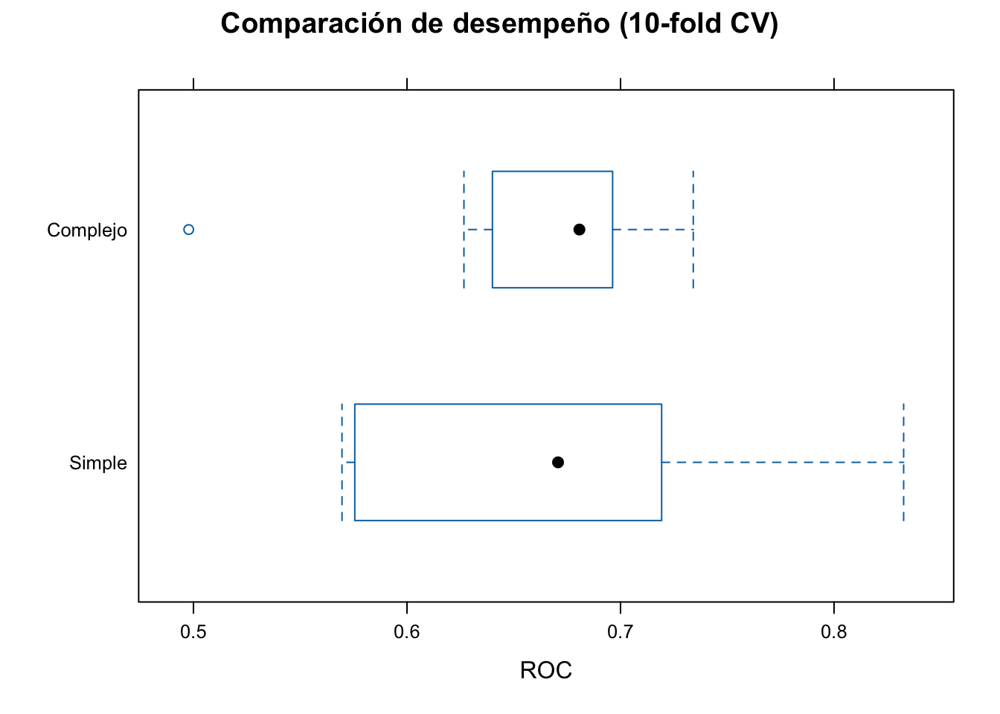
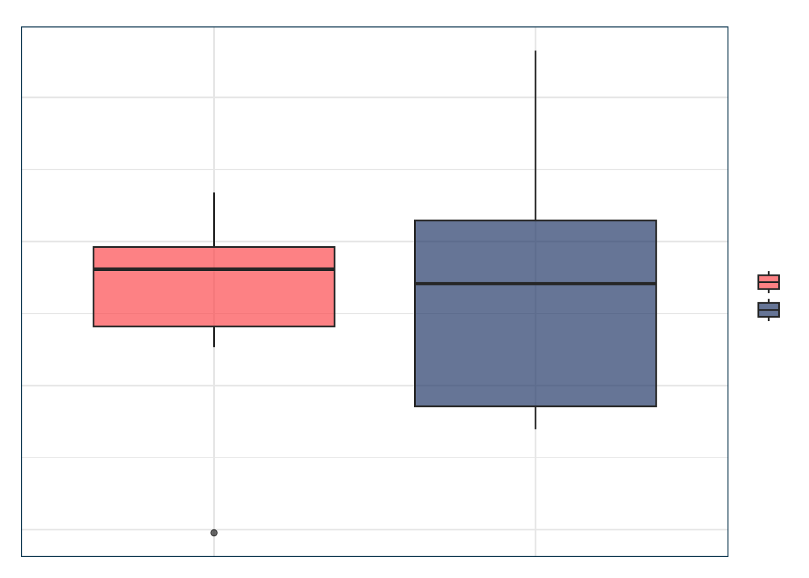

#> Rows: 601
#> Columns: 10
#> $ sex <fct> male, female, female, male, male, female, female, male, f…
#> $ age <dbl> 37, 27, 32, 57, 22, 32, 22, 57, 32, 22, 37, 27, 47, 22, 2…
#> $ ym <dbl> 10.00, 4.00, 15.00, 15.00, 0.75, 1.50, 0.75, 15.00, 15.00…
#> $ child <fct> no, no, yes, yes, no, no, no, yes, yes, no, yes, yes, yes…
#> $ religious <int> 3, 4, 1, 5, 2, 2, 2, 2, 4, 4, 2, 4, 5, 2, 4, 1, 2, 3, 2, …
#> $ education <dbl> 18, 14, 12, 18, 17, 17, 12, 14, 16, 14, 20, 18, 17, 17, 1…
#> $ occupation <int> 7, 6, 1, 6, 6, 5, 1, 4, 1, 4, 7, 6, 6, 5, 5, 5, 4, 5, 5, …
#> $ rate <int> 4, 4, 4, 5, 3, 5, 3, 4, 2, 5, 2, 4, 4, 4, 4, 5, 3, 4, 5, …
#> $ nbaffairs <dbl> 0, 0, 0, 0, 0, 0, 0, 0, 0, 0, 0, 0, 0, 0, 0, 0, 0, 0, 0, …
#> $ everaffair_d <fct> no, no, no, no, no, no, no, no, no, no, no, no, no, no, n…Práctica: Evaluación de Modelos Logísticos y Cross-Validation
1. Contexto y objetivos
Evaluar el desempeño predictivo de un modelo logístico con cross-validation.
2. Cargar y preparar los datos
3. Dos modelos de distinta complejidad
#> Estimate Std. Error
#> (Intercept) 0.15392342 0.42235014
#> ym 0.02151079 0.02128940
#> childyes 0.40748669 0.28317859
#> rate -0.46156942 0.08716552#> Estimate Std. Error
#> (Intercept) -1.3925777289 2.05687210
#> childyes 1.7514867807 2.74367721
#> ym 0.6167620791 0.80395121
#> rate -0.3731941944 0.48830584
#> I(ym^2) -0.0293627976 0.04802184
#> childyes:ym -0.3988596835 0.92275917
#> childyes:rate 0.0235002356 0.66708392
#> ym:rate -0.0156919830 0.19187077
#> childyes:I(ym^2) 0.0156403201 0.05338503
#> rate:I(ym^2) -0.0001854899 0.01168887
#> childyes:ym:rate -0.0438745025 0.22409015
#> childyes:rate:I(ym^2) 0.0039896771 0.013152394. Evaluación in-sample: AIC y BIC
#> # A tibble: 2 × 3
#> Modelo AIC BIC
#> <chr> <dbl> <dbl>
#> 1 everaffair_d ~ ym + child + rate 639.8 657.4
#> 2 everaffair_d ~ child * ym * rate + child * I(ym^2) * rate 644.5 697.35. Limitación: posible overfitting
Usamos cross-validation para evaluar fuera de muestra.
6. Cross-validation con caret
Code
> ctrl <- trainControl(
+ method = "repeatedcv",
+ number = 10,
+ savePredictions = TRUE,
+ classProbs = TRUE,
+ summaryFunction = twoClassSummary
+ )
>
> set.seed(123)
>
> cv_m0 <- train(
+ everaffair_d ~ ym + child + rate,
+ data = affairs, method = "glm",
+ family = "binomial", trControl = ctrl,
+ metric = "ROC"
+ )
>
> cv_m1 <- train(
+ everaffair_d ~ child * ym * rate + child * I(ym^2) * rate,
+ data = affairs, method = "glm",
+ family = "binomial", trControl = ctrl,
+ metric = "ROC"
+ )7. Resultados del cross-validation
Code
> cv_m0$results#> parameter ROC Sens Spec ROCSD SensSD SpecSD
#> 1 none 0.6719936 0.9667633 0.08 0.09216978 0.03810189 0.06885304Code
> cv_m1$results#> parameter ROC Sens Spec ROCSD SensSD SpecSD
#> 1 none 0.6592351 0.9556522 0.1 0.06527264 0.03474516 0.072008238. Matrices de confusión promedio
Code
> confusionMatrix(cv_m0)#> Cross-Validated (10 fold, repeated 1 times) Confusion Matrix
#>
#> (entries are percentual average cell counts across resamples)
#>
#> Reference
#> Prediction no yes
#> no 72.5 23.0
#> yes 2.5 2.0
#>
#> Accuracy (average) : 0.7454Code
> confusionMatrix(cv_m1)#> Cross-Validated (10 fold, repeated 1 times) Confusion Matrix
#>
#> (entries are percentual average cell counts across resamples)
#>
#> Reference
#> Prediction no yes
#> no 71.7 22.5
#> yes 3.3 2.5
#>
#> Accuracy (average) : 0.74219. Visualización del desempeño cruzado
Code
> resamps <- resamples(list(Simple = cv_m0, Complejo = cv_m1))
> bwplot(resamps, metric = "ROC", main = "Comparación de desempeño (10-fold CV)")
Code
> cv_compare <- bind_rows(
+ cv_m0$resample %>% mutate(modelo = "Simple"),
+ cv_m1$resample %>% mutate(modelo = "Complejo")
+ )
>
> ggplot(cv_compare, aes(x = modelo, y = ROC, fill = modelo)) +
+ geom_boxplot(alpha = 0.7) +
+ scale_fill_manual(values = c(julia$coral, julia$teal)) +
+ labs(
+ title = "Desempeño en validación cruzada",
+ subtitle = "Comparación del área bajo la curva (ROC)",
+ x = "", y = "ROC promedio"
+ ) +
+ theme_julia()
10. Conclusión
Cross-validation permite estimar error fuera de muestra y evitar sobreajuste. En regresión logística, guía la selección de modelos con verdadero poder clasificador.